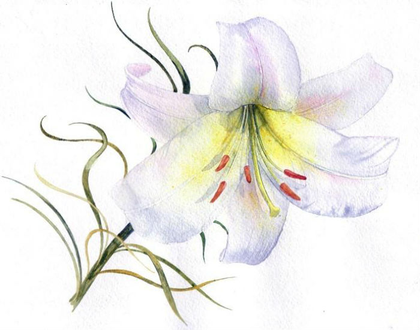

|  | Королевский изысканный цветок с многообразием окрасок и форм. Лилия (лат. Lilium) – род растений семейства Лилейные, представляющий собой многолетние травы, растущие из луковиц. Насчитывает род лилий в природе около 80 видов, которые в культуре дали жизнь многим сортам и гибридам. Растут лилии в Азии, Европе и Северной Америке. |
| Группа | Название |
|---|---|
| 1 группа | Азиатские гибриды |
| 2 группа | Мартагон гибриды |
| 3 группа | Кандидум гибриды |
| 4 группа | Американские гибриды |
| 5 группа | Длинноцветковые гибриды |
| 6 группа | Трубчатые и Орлеанские гибриды |
| 7 группа | Восточные гибриды (ориенталии) |
| 8 группа | Межвидовые гибриды: ЛА-гибриды, ОТ-гибриды, ЛО-гибриды, ОА-гибриды |
| 9 группа | Все виды и разновидности дикорастущих лилий |